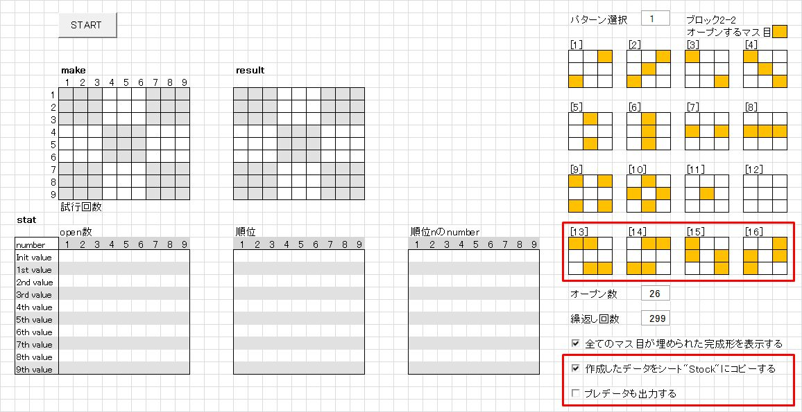
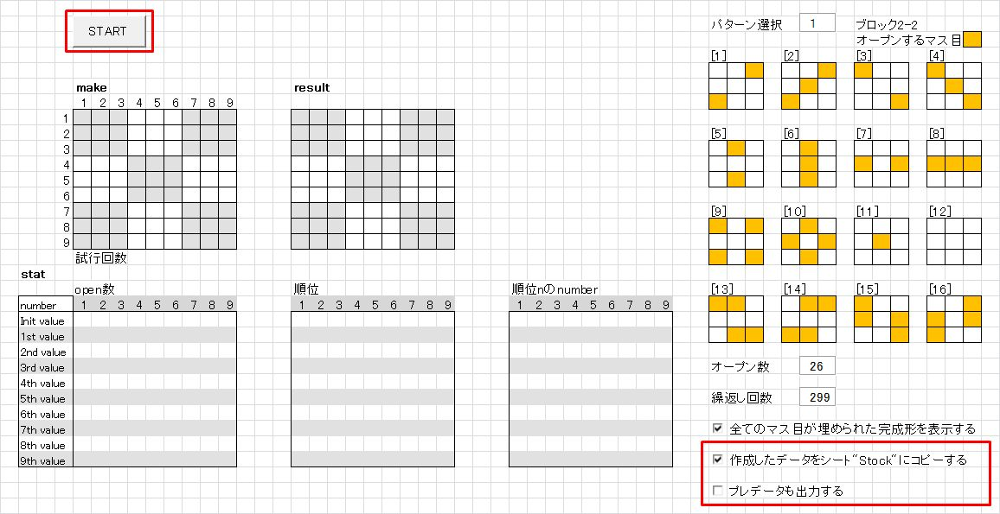
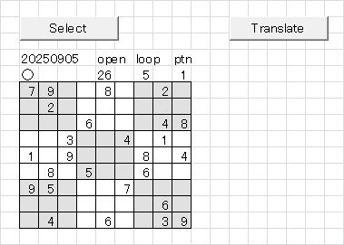
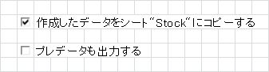
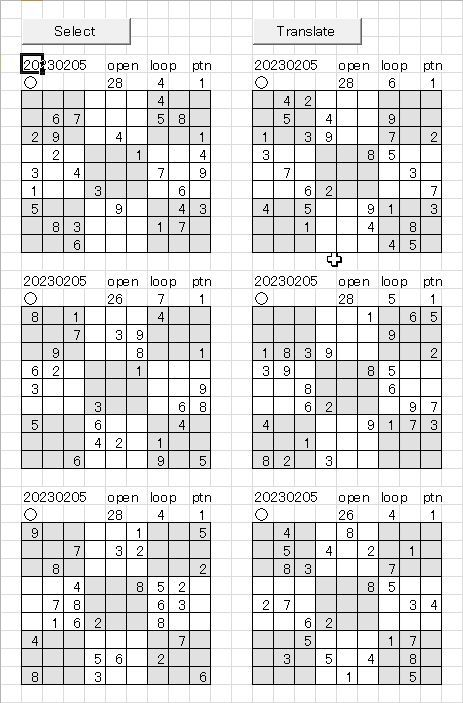
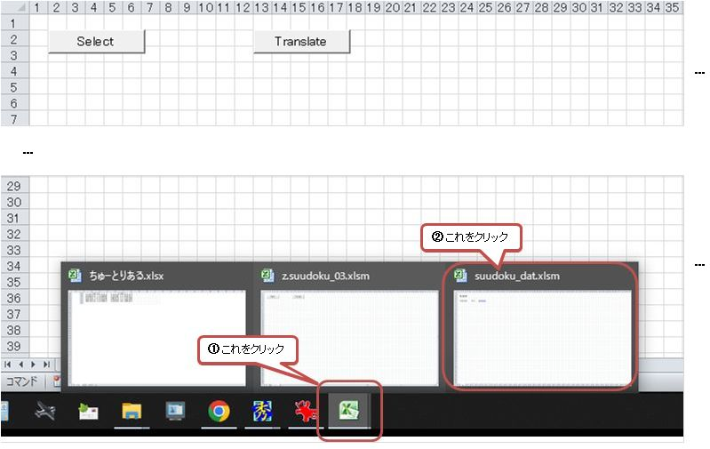
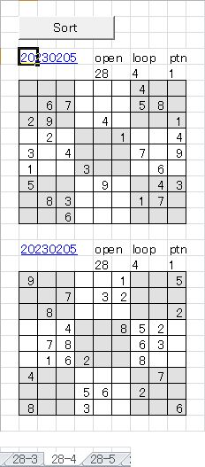

｢数独問題作成ツール アップデート｣ 取り扱い説明書
数独ツールに作成した問題を記録するロジックを追加しました。
せっかく作ったデータですから、面白そうなデータは簡単に記録できるようにしたいと思いました。
このツールを初めてお使いになる方は、
suudoku_02_doc
をご一読下さい。レイアウトに若干の変更がありますが、
このツールの概要を理解して頂けると思います。
このツールを使用するにあたって
- このツールの無断転載を一切禁止します。
-
ロジックの改善、改良をお考えの場合は、ご連絡頂ければソースコードをお送り致します。
ロジックの改造でオープン数で22, 21に成功した場合、御一報頂けるとうれしいです。
併せて、そのロジックも教えて頂けることを期待します。
インストール
z.suudoku_03.zipを解凍します。
解凍すると [z.suudoku_03] フォルダーが現れます。
[z.suudoku_03] に、必要なデータ一式が格納されています。
適当な場所に、[z.suudoku_03]フォルダーを移動して下さい。
アンインストール
[z.suudoku_03] フォルダーを削除して下さい。
これで、削除完了です。
起動
[z.suudoku_03] フォルダー内の "z.suudoku_03" (拡張子が表示されている場合は "z.suudoku_03.xlsm" )をダブルクリックして下さい。
数独問題作成ツールが起動します。
アップデートの概要は以下の通りです。
-
このツールのファイル名を｢z.suudoku_02.xlsm｣から｢z.suudoku_03.xlsm｣に更新しました。
z.suudoku_02.xlsmをお使いの場合は、今後必要なくなります。新しいz.suudoku_03.xlsmをお使い下さい。 -
- データ作成シート｢Make｣にデータを記録するか否か促すチェックボックスを追加しました。
-
予めオープンするマス目のパターンを指定するブロック2-2に
[13]から[16]のパターンを追加しました。

-
作成したデータを一時的に格納する｢Stock｣シートを新規追加しました。
-
作成したデータの中で残したいものを格納していくために、suudoku_dat.xlsmを新規追加しました。
問題作成の流れに沿って簡単に説明します
-
エクスプローラーから｢z.suudoku_03.xlsm｣を開きます。
[Make]シートの右下の｢作成したデータをシート"Stock"にコピーする｣にチェックが入っていることを確認します。
チェックを消すと、前バージョンの ｢z.suudoku_02.xlsm｣ と全く同様の処理が実行されます。
以下、チェックが入っていることを前提に説明します。
-
｢Start｣ボタンを押します。
しばらくすると、｢Congratulations!｣というメッセージボックが表示されます。問題の作成に成功しました！
-
｢Stock｣シートタブをクリックします。

作成されたデータが表示されています。

データのヘッダーに○印がついています。
記録したいデータの場合は｢Translate｣ボタンを押します。
この後の操作は、5. ｢Translate｣ボタンを押します｣ を参照して下さい。記録する必要のないデータの場合は○印を消します。
｢Select｣ボタンを押すと表示されていたデータが消去されます。

[Make] シートに戻って、問題作成を再開して下さい。
-
｢プレデータも出力する｣について
これまで説明していませんでしたが、 "作成したデータをシート'Stock'にコピーする" がチェックされていると
その下に"プレデータも出力する"というチェックボックスが表示されます。
デフォルトでは、チェックは入っていません。 この場合は、3, で説明した通りの処理が行われます。
チェックを入れると、指定されたオープン数の1つ手前のオープン数で完成形ができた場合、 そのデータも"Stock" シートにコピーされます。
指定のオープン数が｢26｣ であれば、｢26｣を探索中に得られた ｢28｣ の完成形も"Stock" シートにコピーされます。<"プレデータも出力する" をチェックした場合の例を以下に示します。

記録する必要のないデータの○印を消します。
(私見ですが、残すデータは繰返し回数(loopの下の数です)の少ないデータにするのが吉です)
｢Select｣ボタンを押すと○印のついたデータだけが残ります。
○印を全部消してしまった場合は、データが残っていないので、 [Make] シートに戻って、問題作成を再開して下さい。
-
｢Translate｣ボタンを押します。
しばらくすると、データが消えてしまいます。でも、大丈夫です。
ディスプレイの下に表示されているタスクバーのエクセルのアイコンにカーソルを合わせると(①)、
｢suudoku_dat.xlxm｣のポップアップが出て来るのでクリックします(②)。
最初に[log]シートが表示されますが、 先ほど○印をつけたデータのヘッダー情報がリンク付きで、格納した日付の後に並んでいます。

リンクをクリックすると、データが格納されているシートの当該データが表示されます。
このように作成した問題は、｢オープン数｣と｢解くための繰返し回数｣で名前付けられたシートに蓄えられて行きます。
-
1.から4.の操作を繰り返すと、データが格納されているシートのデータ数が増えてきます。
各シートにはオープン数が同一で、難易度が同じと考えられるデータが記録されています。
｢Sort｣ボタンを押すとパターン(※)毎にデータを並び替え、オリジナルデータが表示されているブロックの下に表示されます。
(元々時系列で表示されているオリジナルデータは変更はありません)
※パターンは1.の右上に表示されている3x3の真ん中のブロックで、予めナンバーがオープンされるマス目のパターンです。